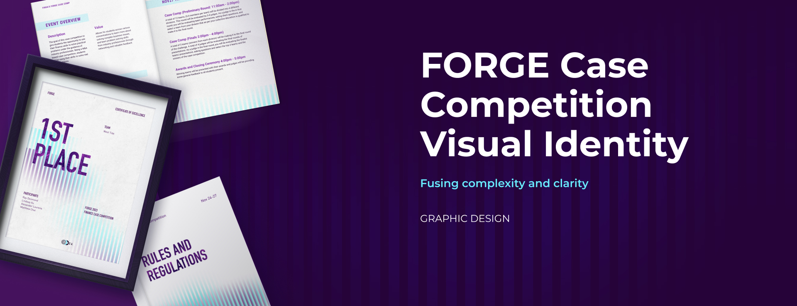
FORGE Visual Identity
An intriguing yet clean art direction that enhanced the experience of a case competition.
From marketing materials to assets in the pitching room, the visuals showcases how complexity and clarity intertwine in FORGE.
- Team
- Sylvia Zhang (myself), Jo Zhou
- My Role
- Art Director, Graphic Designer
- Tools
- Figma, Photoshop, After Effects
- Duration
- 2 Weeks
Context
FORGE is a case competition for students interested in finance. Since FINSA, the club hosting FORGE, was new and unrecognized, success in this event can add to the community's reputation. However, the lack of reference to past events brought marketing challenges. As the design director of the team, I framed the challenge as:
In the absence of past reference, how might we cultivate positive expectations and perceptions of FORGE using visual design to attract student participants?
Discover
Imagnining through words
I approached the problem by exploring how different groups envision the event. I collected keywords from the FORGE planning committee and asked 5 students interested in finance what event would appeal to them. Two things that stood out from the results were excitement and challenge.
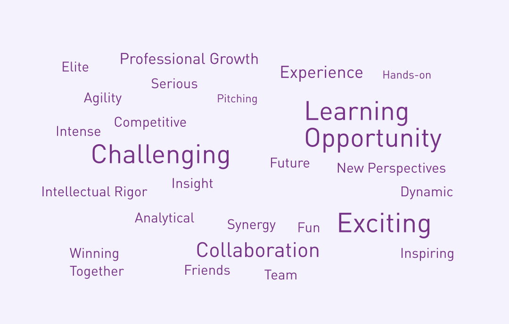
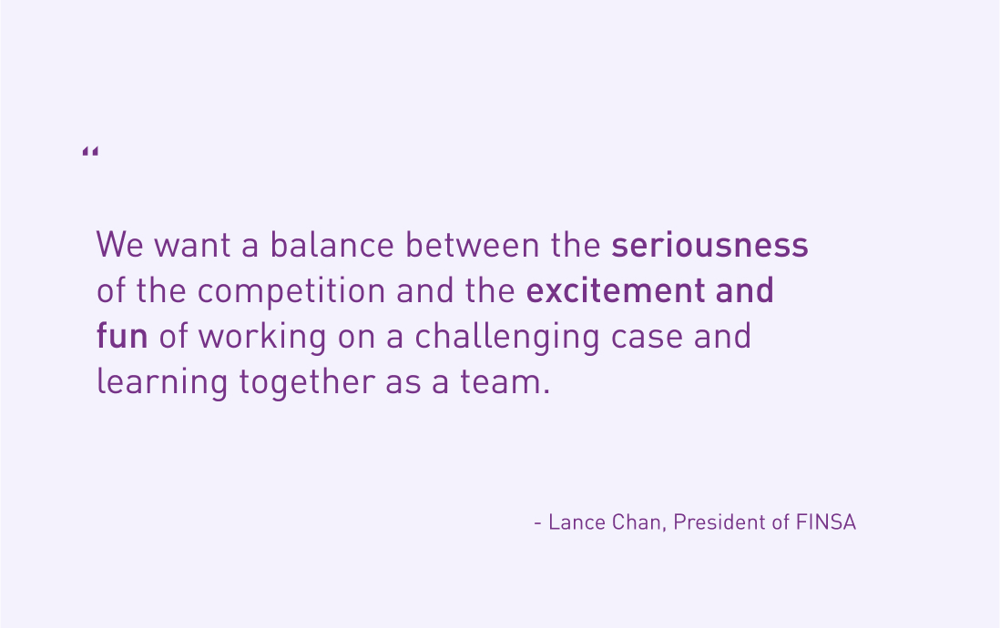
Interpreting with visuals
Meanwhile, I looked into the meaning of the word “FORGE” and visual representations that can connect it to the context of finance case competition. Visual inspirations were sorted into potential art direction groups.
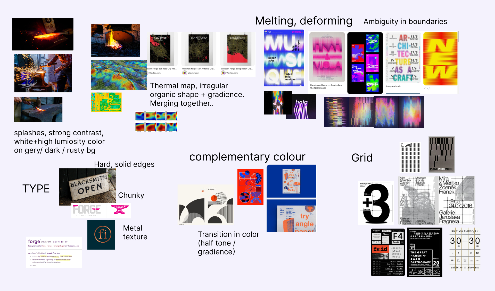
How might the art direction of FORGE convey the challenging and inspiring nature of the event to leave participants a good impression?
Define
Visualizing excitement for complexity
Based on results from the verbal and visual exploration, I narrowed down the directions into the following:
- Complexity: Varying forms with ambiguous boundaries illustrate the challenging nature of FORGE.
- Dynamic: Vibrant and contrasting colours introduce a sense of excitement.
- Organized: The use of grid and alignment brings a sense of order and clarity.
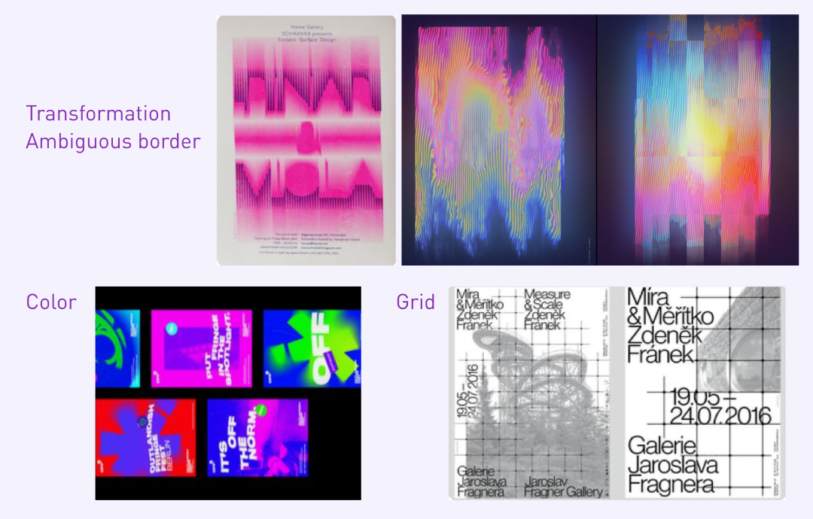
Develop
Testers
I created several tester graphics to develop the final art directions with my coordinator.
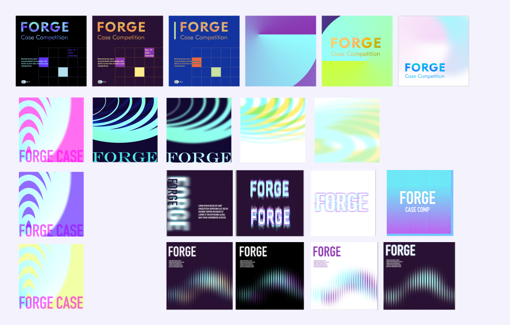
Font Choice
I chose DIN 1451 Engschrift as the header font. The condensed sans-serif font is known for its clean, modern, and professional appearance. While the bold and straightforward Eng schrift imparts a serious tone, it can add excitement through contrast with other visual elements. A lava texture is applied to the main header to bring complexity and dynamics into the type.
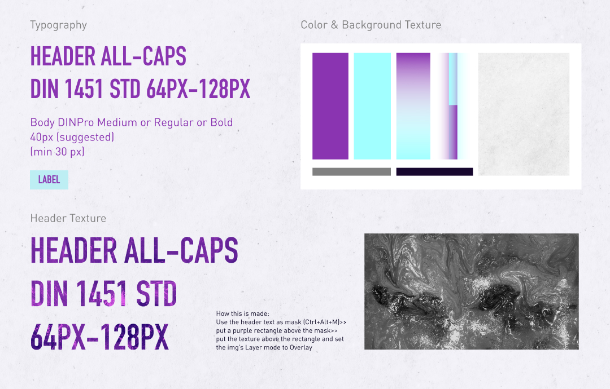
Colour + Visual Element
While the deep violet symbolizes complexity and adds intellectual depth, the bright cyan strikes a contrast and represents the dynamic and exciting aspects of the finance competition. As the translucent waves of strips overlap, the two colours create an optical gradience that piques viewers’ interest. A textured off-white background sets a clean aesthetics for the visual identity.
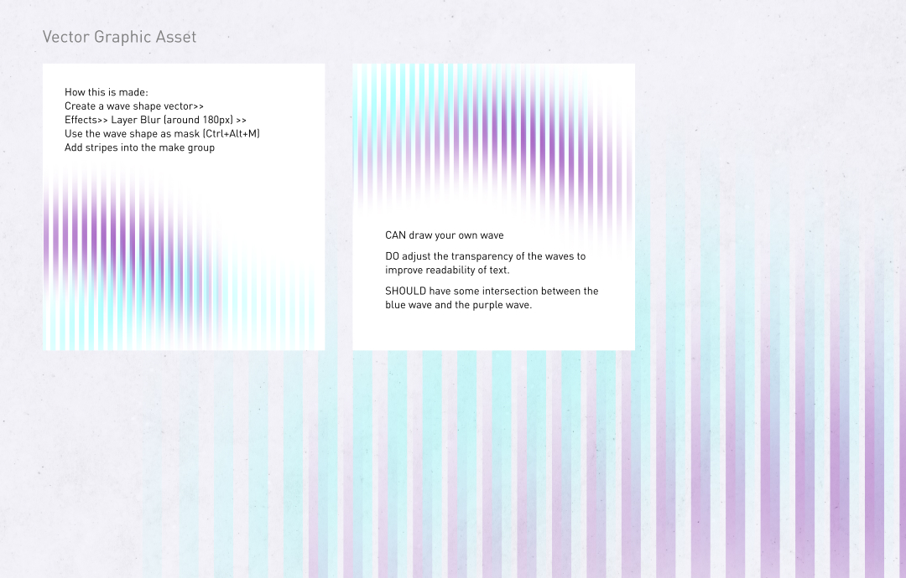
Deliver
Application of Final Visual Identity
The art direction was applied to assets across the event, giving participants a cohesive and memorable experience.
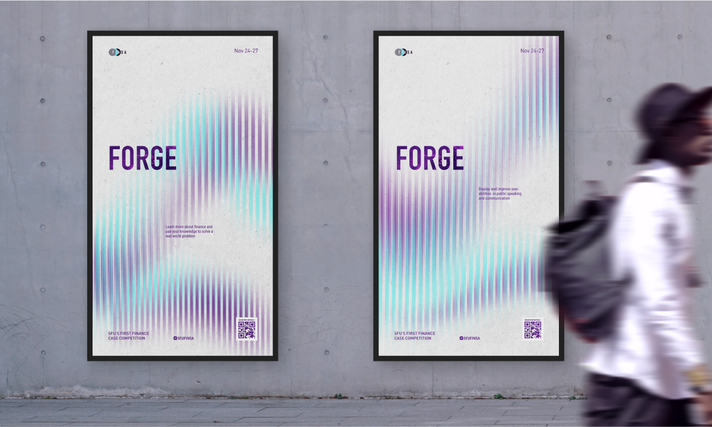
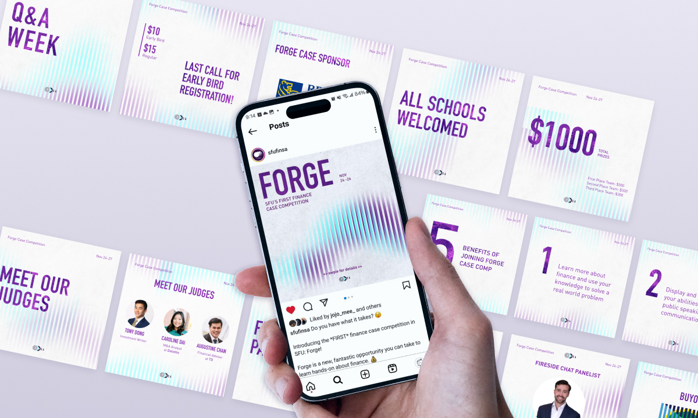
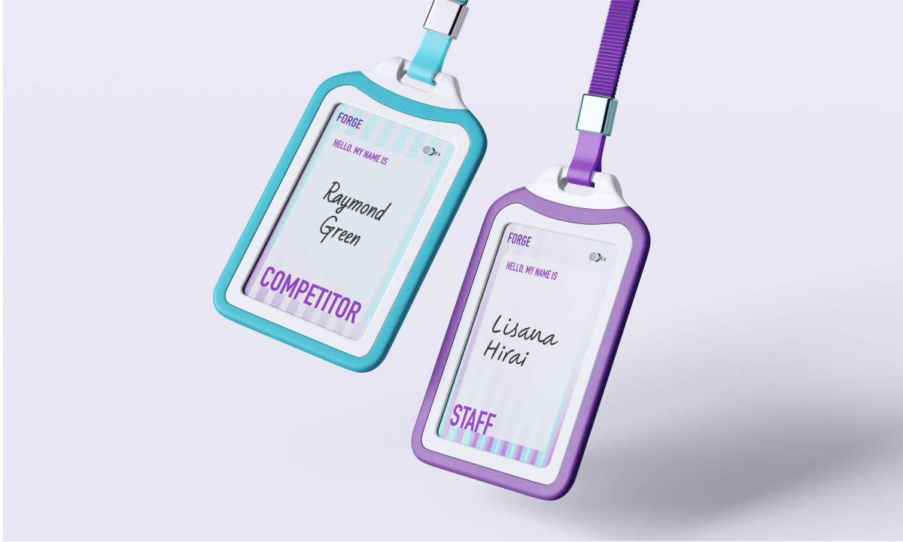
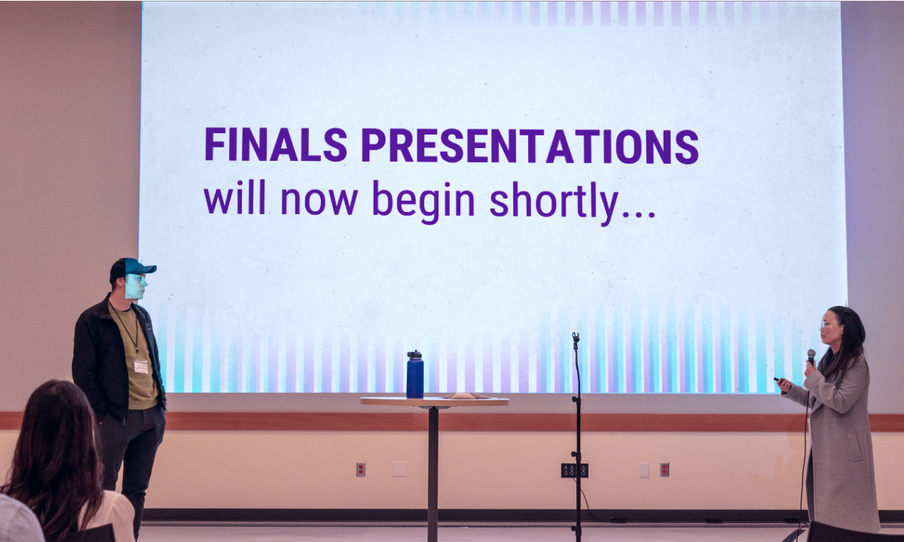
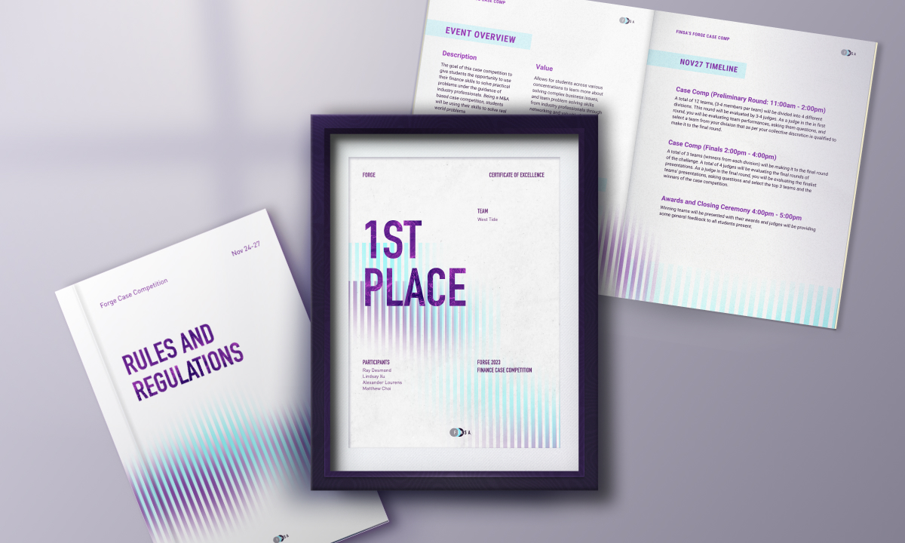
Reflection
The art direction is the experience
Through this project, I learned that good art direction goes beyond grabbing attention. By digging into the client and its target audience, we can convey more meaning and emotions through art direction. When constantly applied to a wide range of assets, the art direction becomes part of the participant’s immersive experience.